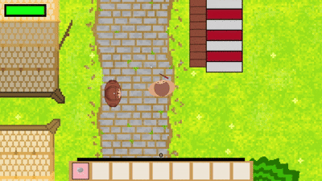

Arcana Rift
Quest giver NPC
One NPC, an endless supply of objectives — because both halves of the quest are rolled at random.

How the quest system works
- A special NPC in the world hands out the quests.
- Every time you talk to him you get a random quest to defeat a specific enemy type.
- The enemy type is picked at random from Slime, Skeleton or Zombie.
- The number of kills required is rolled separately — somewhere between 5 and 12.
- Complete it, return to the NPC to hand it in, and pick up the next one.
How it feels to play
Rolling both the enemy and the count keeps every quest feeling fresh. Sometimes you get an easy one — a handful of slimes — and sometimes you have to go hunting down a tough band of skeletons. That unpredictability is what makes players keep talking to him.
Example quests
- Defeat 8 Slimes
- Defeat 11 Skeletons
- Defeat 6 Zombies
Both the enemy type and the number are randomised each time you accept a new quest.
Rewards
Hand the quest back in and the NPC pays out — either coins or XP.